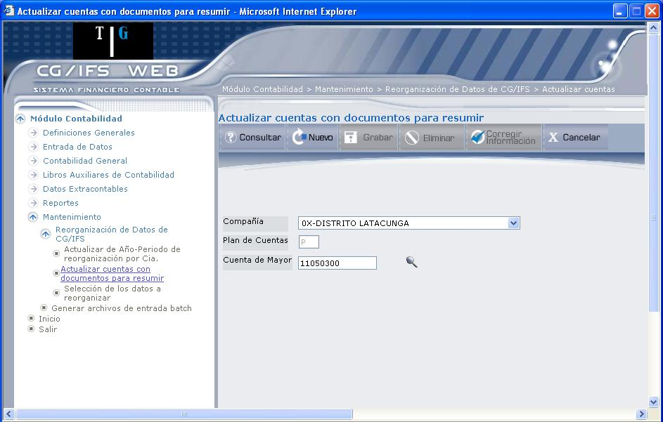
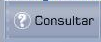
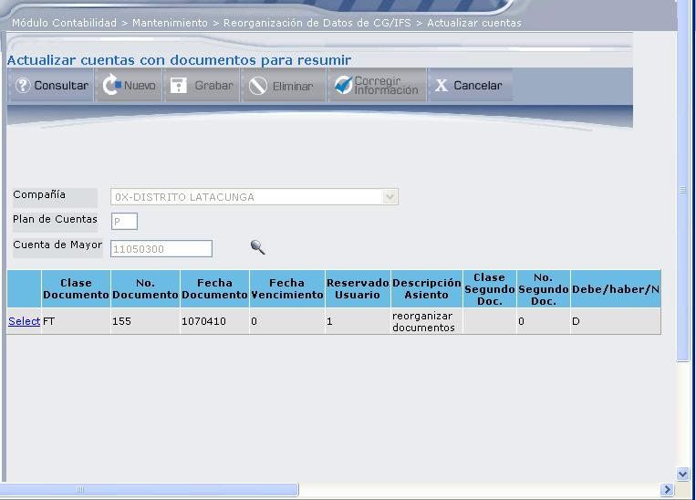
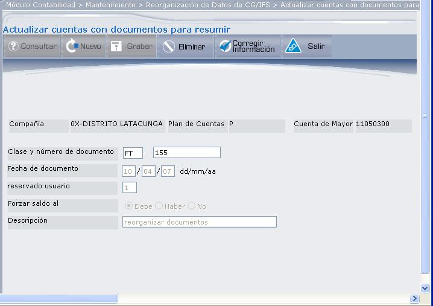
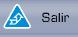
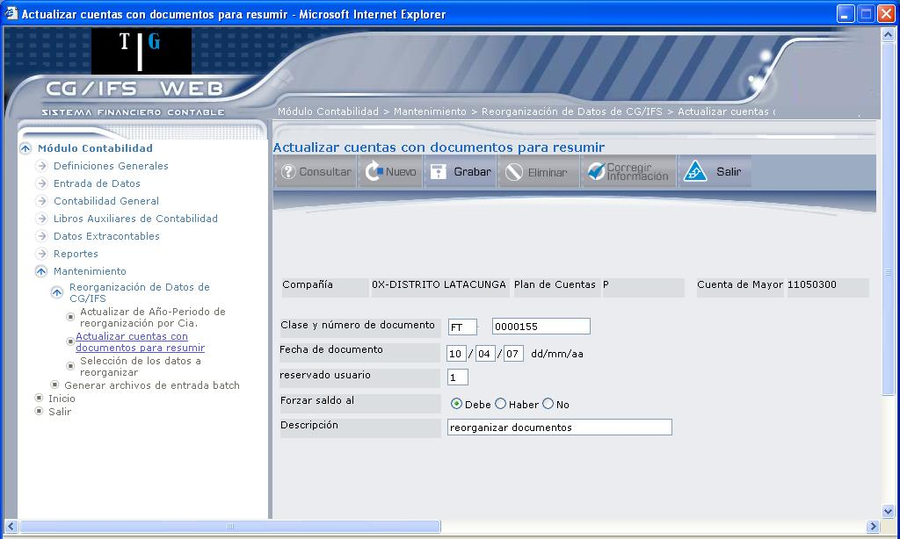
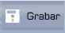

Actualizar Cuentas con Documentos para Resumir
Esta opción permite en primer lugar indicar de qué Cuentas de Mayor, de las que trabajan con documentos, se desean suprimir los movimientos correspondientes a documentos no cancelados y seguidamente, definir el documento de resumen que sumariza cada combinación Cuenta Mayor-Auxiliar Primero, Auxiliar Segundo y Auxiliar Tercero.
Al seleccionar esta opción se mostrará la pantalla representada en 1.5.

Figura 1. Reorganización de Año - Periodo.
Los campos que muestra 1.5, permiten al usuario consultar o crear un documento resumen.
Compañía:
Seleccione la compañía sobre la que desea efectuar la reorganización de los movimientos, dando clic en el botón que despliega la lista de valores.
Plan de Cuentas:
Despliega automáticamente el Plan de Cuentas de seleccionada.
Cuenta de Mayor:
Seleccione de Mayor sobre la que desea que al efectuar la reorganización, resuma los movimientos dando clic en el ícono (), se desplegará la lista de Cuenta de Mayor seleccionada como muestra 1.5.
Una vez registrada esta información, puede consultar el documento resumen que se definió en , Plan de Cuentas y Cuenta de Mayor seleccionada y si no existe puede ingresar un nuevo documento para resumir los movimientos, esto lo puede realizar con los botones Consultar o Nuevo respectivamente.
BOTONES


Figura 1. Actualizar Cuentas con documentos para resumir.
Como puede observar, se despliega el documento para resumir; al dar clic en el vínculo Select, se desplegará en detalle el documento, como muestra 1.7, donde los campos permanecen protegidos.

Figura 1. Actualizar Cuentas con documentos para resumir – Detalle de documento.



Figura 1. Actualizar Cuentas con documentos para resumir – Detalle de documento.
En la parte superior se despliega , el Plan de Cuentas y de Mayor, que se ingresó en la pantalla anterior (Figura 1.5)
Clase y número de documento:
Digite la clase y número de documento. de documento, se refiere al tipo de documento al que hace referencia.
Fecha de Documento:
Digite la fecha que debe llevar el documento que se está definiendo, con formato dd/mm/aa.
Reservado Usuario:
Se puede utilizar este campo para una clasificación adicional. Está limitado a la función que desee proporcionarle el usuario, para una posterior identificación. (Esta definición se explica en el Glosario de este manual)
Forzar Saldo al:
Marque el casillero de selección en una de las siguientes opciones:
- “Debe”, para que el saldo resultante se anote en el Debe.
- “Haber”, para que el saldo resultante se anote en el Haber.
- “No”, para que el saldo resultante se anote en el Debe o en el Haber según sea el resultado del resumen.
Descripción:
Digite la descripción del documento que se define para resumen.

En esta pantalla únicamente se encuentran activos el botón Grabar y el botón Salir, este último permite salir de la pantalla actual, para regresar a la anterior.
Created with the Personal Edition of HelpNDoc: Create iPhone web-based documentation